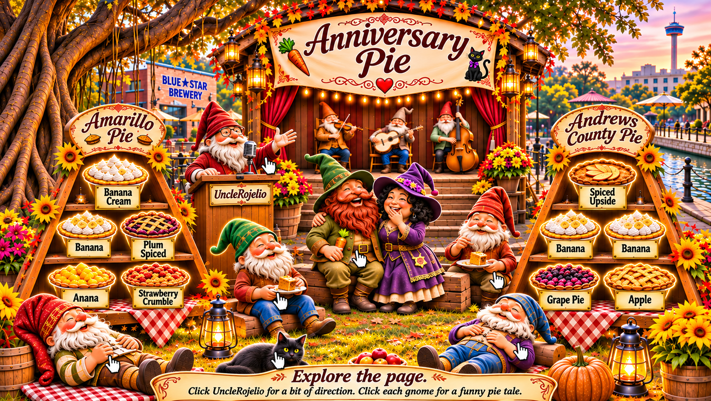

♫ The musicians strike up a golden tune! ♫
Explore the page. The pies, UncleRojelio, the celebrating gnomes, Lady Black Cat, and the cat all have something to say. Follow the story, then arrange each stand's five pies in the anniversary procession.
Amarillo Pie · North
Choose five pies in the order they belong in the procession.
Andrews County Pie · West
The western feast has its own five-step procession.